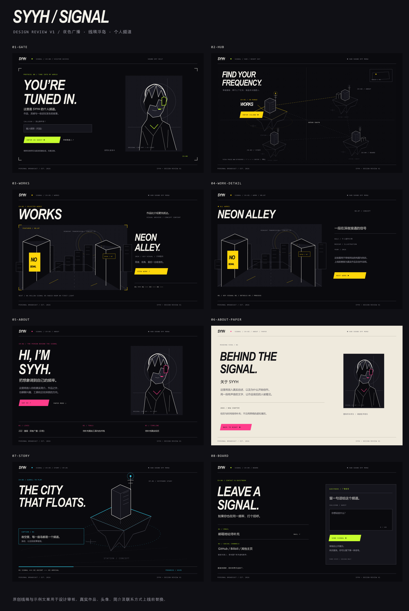

01 / SKY CITY
天空之城
城堡、桥、花园与瀑布；高耸纵向剪影。
完整设计、架构、素材生产流程和两个 Agent 的任务契约。ChatGPT 统筹、生成图片、使用 Blender、实现核心代码并验证；Grok CLI 搜集素材与信息，完成一般编码。
| 阶段 | 重点 | 交付 |
|---|---|---|
| 1 · draft第一版网站 | 可运行完整浏览流程，概念图与3D代理 | draft-v1 / 本机Docker |
| 2 · 第一版网站修正和完善 | 按反馈修正，冻结范围与素材需求 | draft-v1-reviewed |
| 3 · 素材的完善和补充 | 图片生成、Blender、真实内容与辅助资源 | assets-v1 |
| 4 · 第一版正式网站建设 | 正式集成、生产能力与所授权部署 | v1.0.0 / 运行记录 |
| 5 · 第一版正式网站修正和补充 | 实际问题修复、内容/素材补充与回归 | v1.0.x |
页面、视觉、双主题、人物与四岛、旅行和跳转。
ARCHITECTURE完整实施方案技术选型、接口、路由、3D控制、数据与部署。
ASSET PIPELINE素材设计与生成图片、Blender、GLB、来源检索、预算和验收。
TWO AGENTS协作与工具流程文件归属、任务交接、CLI命令、验证责任。
EXECUTION五阶段31项任务按阶段安排依赖、素材/部署任务、验收与交接。
DOCKER DELIVERY编程与云端部署流程本机Linux验证、Git与云端构建、传输估算、镜像交付备选及回滚。
COMPLETE EDITION全部方案合订本完整正文汇总，适合连续阅读与交给新 Agent。

v1 负责布局与内容节奏；右侧人物线稿仅是占位，正式入口需骨骼绑定的 3D 人物。

全站保存主题偏好；About Paper 作为局部阅读样式。图片中的主题控件是设计示意。


| 事项 | 影响 | 可以先做 |
|---|---|---|
| 人物形象 | 正式角色设计与模型 | 代理模型、骨骼控制器、入口页面 |
| 频道绑定 / 世界渲染 | 最终配置 / 全3D分支 | WorldAdapter、可配置2.5D、语义导航 |
| 真实作品与个人资料 | 最终内容 | schema、页面结构、诚实空状态 |
| Story故事 | 正式图帧与序列 | 静态章节和播放器接口 |
| 域名与镜像仓库 | HTTPS / 在线镜像交付 | 已定Ubuntu目标，本机验证与离线发布包 |